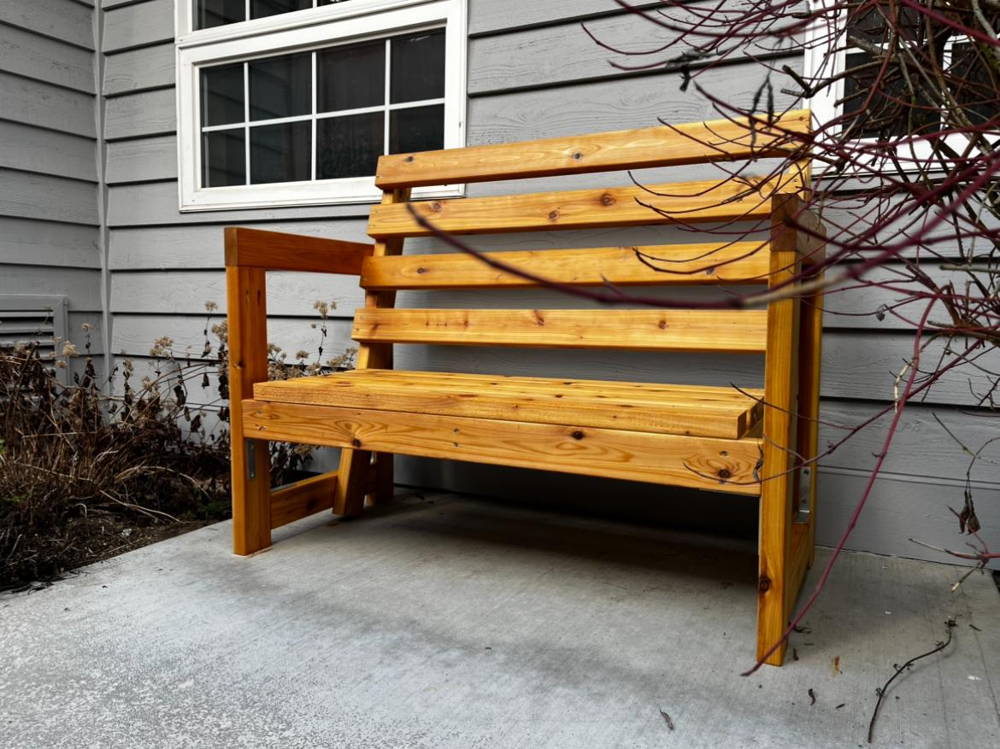
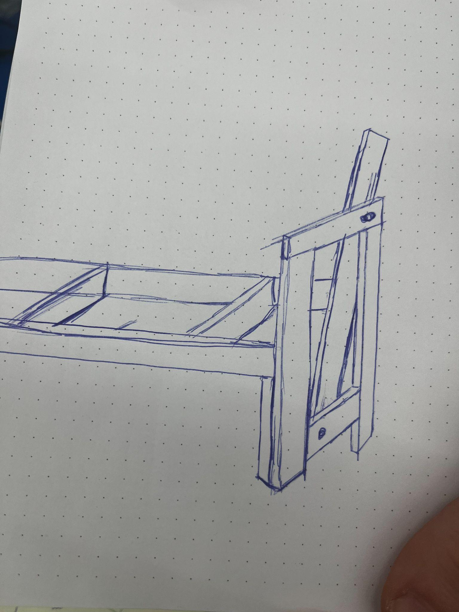
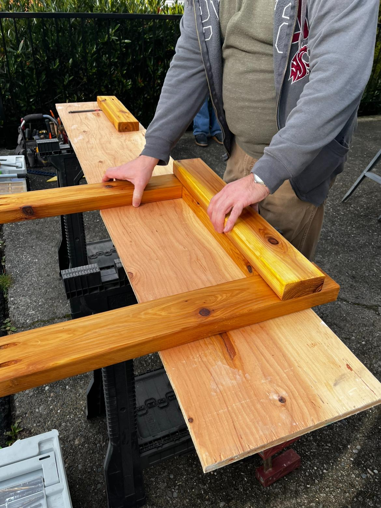
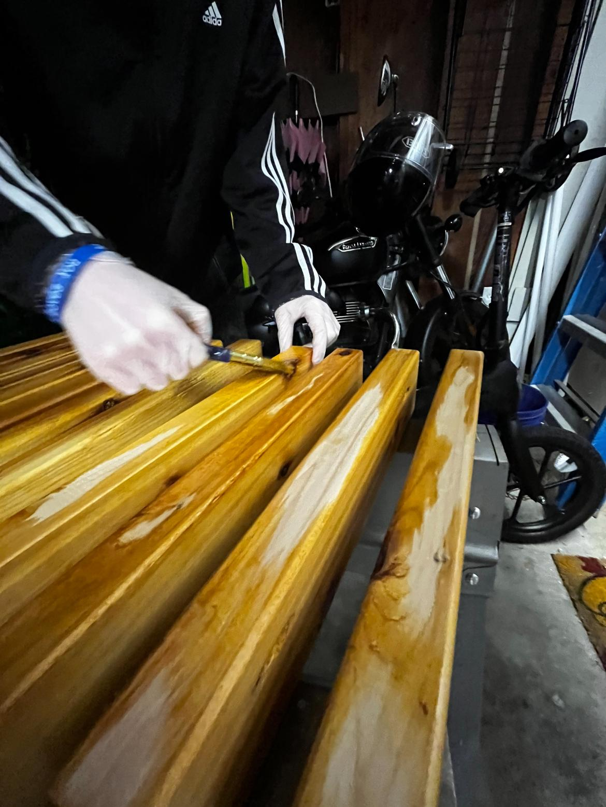

EAGLE SCOUT · LEADERSHIP & FABRICATION
Eagle Scout Project.
Planning, fundraising, and leading volunteers to replace two deteriorating benches at St. Paul’s Orthodox Church.

THE NEED
Replace benches that had deteriorated.
Two benches along a side walkway at St. Paul’s Orthodox Church were rotting. For my Eagle Scout project, I developed a plan to replace them, raised funds, purchased materials, recruited volunteers, and led the build over several work sessions.
The project took months of preparation before construction began. I broke the work into smaller goals, coordinated people and supplies, and helped with the cutting, staining, assembly, and installation. Leading the group was a learning curve: I had to turn an initially overwhelming list of tasks into a sequence the team could carry out.
PROJECT PATH
From proposal to finished benches.
- December 17, 2025Plan and approval
Submitted the project plan and fundraising application.
- January–February 2026Prepare the build
After approval, began fundraising, recruited helpers, and bought materials and supplies.
- February 7, 11 & 14Build and finish
Led volunteer work sessions to construct, stain, and install the benches.
- February 17, 2026Close out
Submitted the final project report.



WHAT I TOOK AWAY
Lead with a plan people can use.
I used specific, manageable goals to organize the project and the Explain, Demonstrate, Guide, Enable approach to help volunteers participate. The experience strengthened how I plan a physical build, communicate tasks, and adapt while working with a team.
← Back to projects